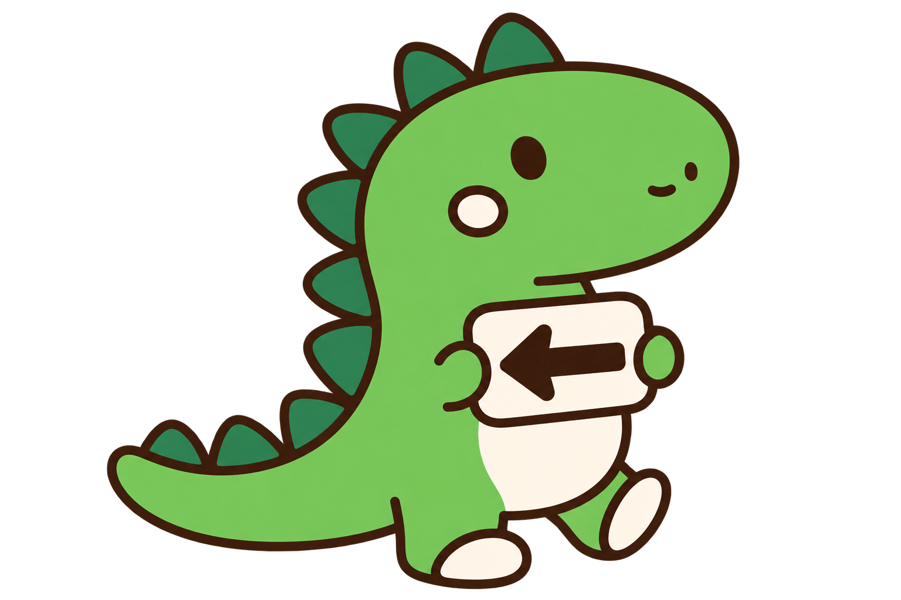
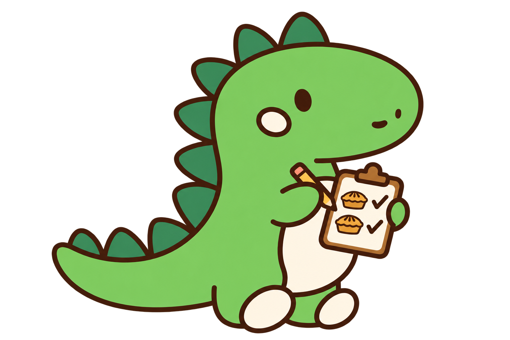

Choose — looking toward a pie card
Download PNG
Pay — waiting with an arrow sign
Download PNGThanks — happy chomp
Download PNGSold out — empty plate
Download PNG
Six poses for the kiosk. Transparent PNGs · 1536 × 1024 each.

